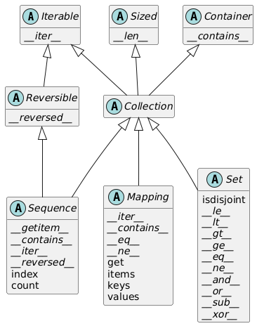

Chap 1：数据结构⚓︎
约 5399 个字 210 行代码 预计阅读时间 30 分钟
Python 数据模型⚓︎
Python 数据模型是 Python 语言的 API，确立序列、函数、迭代器、协程、类、上下文管理器等部分的行为，而这些行为则依靠特殊方法（又称“魔术方法”）实现。
- 特殊方法的名称前后两端都有双下划线，比如
__getitem__、__len__等 -
自定义对象发生以下行为时都会用到特殊方法：
- 容器
- 属性存取
- 迭代（包括使用
async的异步迭代） - 运算符重载
- 函数和方法调用
- 字符串表示形式和格式化
- 使用
await的一步变成 - 对象创建和解构
- 使用
with和async with语句管理上下文
-
数据模型 & 特殊方法的好处：
- 不需要记住标准操作的方法名称（获取项数可以直接用
len()，而不用什么.size()、.length()之类的） - 可以充分利用 Python 标准库，无须重新造轮子
- 不需要记住标准操作的方法名称（获取项数可以直接用
-
一般情况下，特殊方法供 Python 解释器调用，而非用户
- 因此在编写代码一般不会直接调用特殊方法（唯一的例外是
__init__方法） ，而是调用对应的内置函数，这些函数通常速度更快，且提供额外服务 - 对于内置类型，Python 解释器有时可以直接读取其 C 语言底层实现中的结构体字段，而无需调用方法（一种 shortcut
） （比如len(my_object)会直接读取ob_size字段的值（当my_object是某个内置类型的实例时） ）
- 因此在编写代码一般不会直接调用特殊方法（唯一的例外是
-
很多时候，特殊方法是隐式调用的（比如
for i in x:语句会间接调用x.__iter__()（如果有）或x.__getitem__()方法） -
特殊方法的核心用途：
- 模拟数值类型：
+->__add__，*->__mul__，...- 运算符重载
- 对象的字符串表示形式：
repr()->__repr__：获取对象的字符串表现形式- 若自定义类
myClass未定义该方法，该类下的实例在控制台上只能以类似<myClass object at 0x12345678>的形式呈现 - 在表达式求值结果上调用
repr函数的效果类似格式化字符串（%运算符或str.format方法） - 自己实现
__repr__方法时，建议在 f 字符串中使用!r，以标准的表示形式显示变量类型 __repr__方法返回的字符串应当没有歧义，最好与源码保持一致，方便重新创建所表示的对象
- 若自定义类
str()->__str__：返回对终端用户友好的字符串
- 对象的布尔值：
bool()->__bool__（TrueorFalse）- 如果没有实现
__bool__方法，则会尝试调用__len__，若其值为 0，则返回False，否则返回True - 一般也不会直接调用
bool()，因为任何对象都可以直接在布尔值上下文中使用
- 如果没有实现
-
容器 API
- 基本容器类型的 UML 类图，介绍了 Python 中最重要的容器接口
- 图中所有的类都是抽象基类（后面会详细讨论的
） ，斜体方法都是抽象方法（带“抽象”的不能直接创建实例或直接使用，只能通过子类继承间接使用） -
抽象基类
Collection统一顶层的 3 个基本接口，每个容器类型均应实现：Iterable：支持for、拆包和其他迭代方式Sized：支持内置函数lenContainer：支持in运算符
Python 不强制要求具体类继承这些抽象基类中的任何一个
-
Collection有 3 个重要的专用接口：Sequence：规范list和str等内置类型的接口Mapping：被dict、collection.defaultdict等实现Set：是size和frozenset两个内置类型的接口- 它的所有特殊方法实现的都是中缀运算符
- 模拟数值类型：
-
特殊方法汇总（超半数以上的特殊方法用于实现各类运算符
） ：- 表 1：特殊方法名称（不含运算符）
分类 方法名称 字符串（字节）表示形式 __repr____str____format____bytes____fspath__转化为数值 __bool____complex____int____float____hash____index__模拟容器 __len____getitem____setitem____delitem____contains__迭代 __iter____aiter____next____anext____reversed__可调用对象或执行协程 __call____await__上下文管理 __enter____exit____aexit____aenter__构造和解构实例 __new____init____del__属性管理 __getattr____getattribute____setattr____delattr____dir__属性描述符 __get____set____delete____set_name__抽象基类 __instancecheck____subclasscheck__类元编程 __prepare____init_subclass____class_getitem____mro_entries__- 表 2：运算符的符号和背后的特殊方法
运算符分类 符号 方法名称 一元数值运算符 -+abs()__neg____pos____abs__各种比较运算符 <<===!=>>=__lt____le____eq____ne____gt____ge__算术运算符 +-*///%@divmod()round()**pow()__add____sub____mul____truediv____floordiv____mod____matmul____divmod____round____pow__反向算术运算符 （交换算术运算符的操作数） __radd____rsub____rmul____rtruediv____rfloordiv____rmod____rmatmul____rdivmod____rpow__增量赋值算术运算符 +=-=*=/=//=%=@=**=__iadd____isub____imul____itruediv____ifloordiv____imod____imatmul____ipow__按位运算符 &\|^<<>>~__and____or____xor____lshift____rshift____invert__反向按位运算符 （交换按位运算符的操作数） __rand____ror____rxor____rlshift____rrshift__增量赋值按位运算符 &=\|=^=<<=>>=__iand____ior____ixor____ilshift____irshift__
序列⚓︎
序列可分为容器序列和扁平序列。
- 容器序列：可存放不同类型的项，其中包括嵌套容器，比如
list、tuple、collections.deque- 序列内实际存放的是所包含对象的引用，也就是说序列内的每一项都是引用，不是实际值
- 任何 Python 对象在内存中都有一个包含元数据的标头，比如
float的内存标头有一个值字段ob_fval（双精度）和两个元数据字段ob_refcnt（对象的引用计数）和ob_type（指向对象类型的指针）
- 扁平序列：可存放同种简单类型的项，比如
str、bytes、array.array- 序列存放的是原始机器值，比如字节、整数、浮点数等，更为紧凑
例子


序列还可以按可变性分类，分为：
- 可变序列：
list、bytearray、array.array、collection.deque- 可变序列继承不可变序列的所有方法，并实现了更多方法
- 不可变序列：
tuple、str、bytes
内置的具体序列类型不是 Sequence 和 MutableSequence 抽象基类的子类，而是一种虚拟子类(virtual subclass)（通过注册将一个类声明为另一个类的子类，而无需直接继承
列表推导式和生成器表达式⚓︎
列表推导式是构建列表的常用技巧，它的形式大致如下所示：
>>> symbols = "$¢£¥€¤"
>>> codes = [ord(symbol) for symbol in symbols if ord(s) > 127]
>>> codes
[162, 163, 165, 8364, 164]
- 列表推导式应保持简短，若超过两行，最好将语句拆开，或者用
for循环重写- Python 会忽略
[]、{}和()内部的换行，因此列表、列表推导式、元组、字典等结构可以分为多行书写，无需使用续行转义符\；并且最后一项后面的逗号将会被忽略（对于元组，建议加上这个逗号；对于只有一个项的元组则必须加上逗号，否则就不是元组了）
- Python 会忽略
- 局部作用域（也适用于生成器表达式
） ：- 列表推导式的
for子句中赋值的变量在局部作用域内，也就是说列表外就无法使用该变量了 - 但使用
:=赋值的变量在列表推导式返回后依然可以访问，它的作用域限定在函数内
- 列表推导式的
-
使用
- 将列表推导式用于多个可迭代对象，可以生成笛卡尔积（每一项都是由可迭代对象中的项构成的元组，列表长度为各个可迭代对象长度的乘积）map和filter两个函数可以实现相同效果，但是会更复杂，且速度并不比列表推导式快。对于上例，等价形式为：例子
# 列表推导式 >>> colors = ['black', 'white'] >>> sizes = ['S', 'M', 'L'] >>> tshirts = [(color, size) for color in colors for size in sizes] >>> tshirts [('black', 'S'), ('black', 'M'), ('black', 'L'), ('white', 'S'), ('white', 'M'), ('white', 'L')] # 等价的双重 for 循环（注意循环顺序） >>> for color in colors: ... for size in sizes: ... print((color, size)) ... ('black', 'S') ('black', 'M') ('black', 'L') ('white', 'S') ('white', 'M') ('white', 'L')
生成器表达式在形式上与列表推导式的唯一差别是将方括号改为圆括号，但它相比列表推导式占用内存空间更少，因为它不会直接构造整个列表，而是逐个生成项。
- 如果生成器表达式是函数唯一的参数，则无需额外的圆括号括起来
接着上面“笛卡尔积”的例子
元组⚓︎
元组(tuple) 的两大用途：
-
没有字段名称的记录
- 元组的项数固定，且假定顺序固定（否则会破坏元组中字段的含义）
- 拆包(unpacking) 是常用的操作，用于获取元组中单独的每一项，我们可以将不感兴趣的项赋给虚拟变量
_
例子
# 以下三行都将元组作为记录 >>> lax_coordinates = (33.9425, -118.408056) >>> city, year, pop, chg, area = ('Tokyo', 2003, 32_450, 0.66, 8014) # 拆包 >>> traveler_ids = [('USA', '31195855'), ('BRA', 'CE342567'), ('ESP', 'XDA305856')] # 元组列表 >>> for passport in sorted(traveler_ids): ... print('%s/%s' % passport) ... BRA/CE342567 ESP/XDA305856 USA/31195855 >>> for country, _ in traveler_ids: ... print(country) ... USA BRA ESP -
不可变列表
- 好处：意图清晰（长度固定
） 、性能优越（相比列表占用内存少） -
注意，虽然元组中的引用不可改动，但是如果引用的是可变对象，改动对象后，元组的值也会随之变化。这种存放可变项的元组是不可哈希的，因而这类数组不能作为字典的键或集合的元素
-
利用内置函数
hash判断一个元组的值是否固定（下列代码也适用于其他对象）
- 好处：意图清晰（长度固定
元组相比列表的优势
| 元组 | 列表 |
|---|---|
| 求解元组字面量时，只需一次操作即可生成对应的字节码 | 求解列表字面量时，字节码将每个元素当作独立的变量推入数据栈，然后构建列表 |
给定元组t，tuple(t)直接返回t的引用 |
给定列表l，list(l)创建l的副本 |
| 元组实例长度固定，分配的内存空间正好够用 | 列表实例内存空间会留的更多，应对随时追加的元素 |
| 元组中项的引用存储在元组结构体的一个数组内 | 列表将引用数组的指针存在其他地方，因为列表可以变长；若超出当前分配空间，Python 就要重新分配引用数组来腾出空间，从而导致 CPU 缓存效率低下 |
列表与元组方法比较
| 方法 | 列表 | 元组 | 说明 |
|---|---|---|---|
s.__add__(s2) |
● | ● | s + s2：拼接 |
s.__iadd__(s2) |
● | s += s2：就地拼接 |
|
s.append(e) |
● | 在最后一个元素后追加一个元素 | |
s.clear() |
● | 删除所有项 | |
s.__contains__(e) |
● | ● | e in s |
s.copy() |
● | 浅拷贝列表 | |
s.count(e) |
● | ● | 计算元素出现的次数 |
s.__delitem__(p) |
● | 删除位置 p 上的项 |
|
s.extend(it) |
● | 追加可迭代对象 it 中的项 |
|
s.__getitem__(p) |
● | ● | s[p]：获取指定位置上的项 |
s.__getnewargs__() |
● | 支持使用 pickle 优化序列化 |
|
s.index(e) |
● | ● | 找出 e 首次出现的位置 |
s.insert(p, e) |
● | 在位置 p 上的项之前插入元素 e |
|
s.__iter__() |
● | ● | 获取迭代器 |
s.__len__() |
● | ● | len(s)：项数 |
s.__mul__() |
● | ● | s * n：重复拼接 |
s.__imul__() |
● | s *= n：就地重复拼接 |
|
s.__rmul__() |
● | ● | n * s：反向重复拼接 |
s.pop([p]) |
● | 移除并返回最后一项或可选的位置 p 上的项 |
|
s.remove(e) |
● | 把 e 的值从首次出现的位置上移除 |
|
s.reverse() |
● | 就地翻转项的顺序 | |
s.__reversed__() |
● | 获取逆序的迭代器 | |
s.__setitem__(p, e) |
● | s[p] = e：把 e 放在位置 p 上，覆盖现有的项 |
|
s.sort([key], [reverse]) |
● | 就地排序，key 和 reverse 是可选的关键字参数 |
拆包⚓︎
拆包(unpacking)：获取序列中单独的项
-
并行赋值(parallel assignment)：把可迭代对象中的项赋给变量元组，形如：
>>> lax_coordinates = (33.9435, -118.408056) >>> lattitude, longitude = lax_coordinates >>> lattitude 33.9435 >>> longitude -118.408056- 利用拆包可以轻松交换两个变量的值：
a, b = b, a - 也可以利用拆包接收函数的多个返回值
- 利用拆包可以轻松交换两个变量的值：
-
*号的两种用法-
在变量前加上前缀
*，该变量便可以捕获余下任意数量的参数，常用于并行赋值- 但是
*前缀同时只能用于一个变量，但可以是任意位置上的变量
- 但是
-
在函数的参数 / 列表、元组或集合字面量上使用前缀
*，可以对其进行拆包- 可以多次使用
*
- 可以多次使用
-
-
拆包的对象可以嵌套，若嵌套结构能够对应起来，那么 Python 就可以正确处理了
模式匹配⚓︎
模式匹配是 Python 3.10 新增的功能，它由 match/case 语句实现，类似 C 语言的 switch/case，但是更为强大。
例子
metro_areas = [
('Tokyo', 'JP', 36.933, (35.689722, 139.691667)),
('Delhi NCR', 'IN', 21.935, (28.613889, 77.208889)),
('Mexico City', 'MX', 20.142, (19.433333, -99.133333)),
('New York-newark', 'US', 20.104, (40.808611, -74.020386)),
('Sao Paulo', 'BR', 19.649, (-23.547778, -46.635833)),
]
def main():
print(f'{"":15} | {"lattitude":>9} | {"longitude":>9}')
for record in metro_areas:
match record:
case [name, _, _, (lat, lon)] if lon <= 0:
print(f'{name:15} | {lat:9.4f} | {lon:9.4f}')
if __name__ == '__main__':
main()
match关键字后面的表达式称为匹配对象(subject)（一般为序列，包括list、tuple、memoryview、range、array.array和collections.deque）- 匹配对象会与依次尝试与
case子句中的模式（一般为序列）匹配，若匹配得上，则执行子句内的语句，随后退出；若不匹配，则继续尝试匹配下一个case子句，直到最后一个- 可以在最后设置这样的
case子句：case _:，用于处理默认或异常情况（类似 C 语言的default子句） ，这是一个不错的习惯 - 还可以为
case子句设置可选的，由if关键字指定的卫语句(guard clause)，用于设置额外的匹配条件（比如上例中的if lon <= 0 - 序列模式可以是元组或列表，或任意形式的嵌套元组或列表，因为序列模式中圆括号和方括号无区别
- 但在
match/case上下文中，str、bytes和bytearray实例不作为序列处理，而被视为“原子值”，以避免意想不到的 bug - 模式中的
_可用于匹配相应位置的任意一项，但不绑定匹配值；此外_是唯一可在模式中出现多次的变量*_匹配任意数量的项，且不绑定匹配值；而*extra则将匹配值绑定到变量extra上- 在序列模式中，一个序列只能有一个
*，嵌套的序列也遵从这个规则
- 模式中的任一部分均可使用
as关键字绑定到变量上（比如case [name, _, _, (lat, lon) as coord]:，此时coord == (lat, lon)） - 还可以为模式的每项添加类型信息——借用了构造函数调用的语法，但在模式上下文中仅用于检查类型（比如
case [str(name), _, _, (float(lat), float(lon))]:）
- 可以在最后设置这样的
切片⚓︎
- 切片和区间（
range）不包括最后一项的原因- 容易判断切片或区间的长度，比如
range(3)和my_list[:3]都只有 3 项 - 方便在索引
x处将序列拆成不重叠的两部分，比如my_list[:x]和my_list[x:]
- 容易判断切片或区间的长度，比如
- 切片可以指定步长（
s[a:b:c]中的c） ，可正可负（负数表示逆向） -
实际上，切片的索引是一个切片对象（在
s[a:b:c]中切片对象为slice(a, b, c)）- 可以为切片对象命名，提升代码可读性
例子
invoice = """ 0.....6.................................40...........52...55........ 1909 Pimoroni PiBrella $17.50 3 $52.50 1489 6mm Tactile Switch x20 $4.95 2 $9.90 1510 Panavise Jr. - PV-201 $28.00 1 $28.00 1601 PiTFT Mini Kit 320x240 $34.95 1 $34.95 """ SKU = slice(0, 6) DESCRIPTION = slice(6, 40) UNIT_PRICE = slice(40, 52) QUANTITY = slice(52, 55) ITEM_TOTAL = slice(55, None) line_items = invoice.split('\n')[2:] for item in line_items: print(item[UNIT_PRICE], item[DESCRIPTION]) -
[]内可接受多个索引或切片，以逗号分隔，相关的特殊方法__getitem__和__setitem__会将这多个索引或切片看作一个元组- 在 Numpy 中，
numpy.ndarray表示的二维数组可用a[i, j]获取数组元素，还可用a[m:n, k:l]获取二维切片 - 但除了
memoryview外，Python 内置序列类型都是一维的，因此仅支持一个索引或切片，不支持索引或切片元组 - 省略号（
...，三个句点，ellipsis类中Ellipsis对象的别名）也可作为索引、切片或函数参数- 在 Numpy 中，省略号常作为快捷句法，比如在多维切片中，对于四维数组
x，x[i, ...] == x[i, :, :, :,]
- 在 Numpy 中，省略号常作为快捷句法，比如在多维切片中，对于四维数组
- 在 Numpy 中，
-
使用切片更改可变序列的部分项
- 若赋值目标为一个切片，则右边必须是一个可迭代对象
例子
>>> l = list(range(10))
>>> l
[0, 1, 2, 3, 4, 5, 6, 7, 8, 9]
>>> l[2:5] = [20, 30]
>>> del l[5:7]
>>> l
[0, 1, 20, 30, 5, 8, 9]
>>> l[3::2] = [11, 22]
>>> l
[0, 1, 20, 11, 5, 22, 9]
>>> l[2:5] = 100
Traceback (most recent call last):
File "<python-input-67>", line 1, in <module>
l[2:5] = 100
~^^^^^
TypeError: must assign iterable to extended slice
>>> l[2:5] = [100]
>>> l
[0, 1, 100, 22, 9]
拼接⚓︎
拼接用到的运算符是 + 和 *，功能为：
+：拼接两个同类型序列，且都不可修改，拼接结果为同类型的新序列-
*：序列 * 整数 -> 多次拼接同一个序列，结果为一个新创建的序列- 若序列内包含可变项，则乘法操作后会得到多个指向同一可变项的引用，而非独立的副本
例子
>>> weird_board = [['_'] * 3] * 3 # 实际上这是一种浅拷贝 >>> weird_board [['_', '_', '_'], ['_', '_', '_'], ['_', '_', '_']] >>> weird_board[1][2] = 'O' >>> weird_board [['_', '_', 'O'], ['_', '_', 'O'], ['_', '_', 'O']] # 等价操作为： >>> row = ['_'] * 3 >>> board = [] >>> for i in range(3): ... board.append(row)如果想要得到独立的可变项副本，则需要用到列表推导式或生成器表达式
这两种操作均不会修改操作数本身。但若想通过拼接就地修改序列，则使用这些运算符对应的增量赋值形式 += 和 *=
- 用于可变序列时，仅在原可变序列的基础上增添新项；而用于不可变序列（除字符串外）时，则会重新创建一个新序列，因此效率较低
一个关于 += 运算符的谜题
排序⚓︎
与排序相关的方法或函数：
list.sort方法：就地排序列表，不创建副本，返回值为None- 使用这种返回值的好处是让用户知道接收者已被更改，没有创建新对象；坏处是这使得该方法不能级联调用
sorted()函数：返回新创建的排好序的列表，且可接收任何可迭代对象作为参数，但不会改变原可迭代对象的内容
它们均接受两个可选的关键词参数：
reverse：值为True时按降序排序，默认值为Falsekey：一个单参数的函数，作用于每个项，作为排序依据，默认值是恒等函数（即比较项本身） 。比如key=str.lower执行不区分大小写的排序，而key=len按字符长度为字符串排序- 使用
key参数后，即使列表内的项类型不同，也可以参与排序 - 这个参数类似 C 语言
qsort()中的比较函数（接受双参数） ，但是key参数效率更高，因为它指定的函数仅为每一项调用一次（时间复杂度 \(O(N)\)） ，而双参数比较函数则要在每次比较时调用一次（时间复杂度 \(O(N^2)\)）
- 使用
Python 主要使用的排序算法是 Timsort，这是一种自适应算法，可根据数据的排序方式在插入排序和归并排序之间切换。
其他序列⚓︎
数组⚓︎
若列表中只包含同种类型的数值，那么使用数组类型 array.array 会更加高效。
虽然常说列表可以存放各种类型的项，但是这么做往往是没有意义的，因为包含不同类型项的列表无法使用某些方法或函数，比如没法排序。
- 除了支持所有可变序列的操作外，还有快速加载项和保存项的方法
- 数组存放的不是完整的数值类型实例，而是相应机器值的压缩字节
-
创建
array对象时需提供类型代码，用单个字母表示，比如：b：8 位符号整数（对应 C 语言的signed char，范围为 -128~127）h：16 位符号整数d：双精度浮点数
-
访问（读 / 写）用
array方法创建的二进制文件比存储相同内容的文本文件的速度快得多，且存储空间更小
list 和 array 的方法及属性比较
| 方法或属性 | list |
array |
说明 |
|---|---|---|---|
s.__add__(s2) |
● | ● | s + s2：拼接 |
s.__iadd__(s2) |
● | ● | s += s2：就地拼接 |
s.append(e) |
● | ● | 在末尾追加元素 |
s.byteswap() |
● | 交换数组中所有项的字节，转换字节序 | |
s.clear() |
● | 删除所有项 | |
s.__contains__() |
● | ● | e in s |
s.copy() |
● | 浅拷贝列表 | |
s.__copy__() |
● | 为 copy.copy 提供支持 |
|
s.count(e) |
● | ● | 计算元素出现次数 |
s.__deepcopy__() |
● | 为优化 copy.deepcopy 提供支持 |
|
s.__delitem__(p) |
● | ● | 删除位置 p 上的项 |
s.extend(it) |
● | ● | 追加可迭代对象 it 中的项 |
s.frombytes(b) |
● | 追加字节序列中的项（解释为压缩机器值） | |
s.fromfile(f, n) |
● | 追加二进制文件 f 中的 n 项（解释为压缩机器值） |
|
s.fromlist(l) |
● | 追加列表中的项；一旦抛出 TypeError，一项也不追加 |
|
s.__getitem__(p) |
● | ● | s[p]：获取指定位置上的项或切片 |
s.index(e) |
● | ● | 查找 e 首次出现的位置 |
s.insert(p, e) |
● | ● | 在 p 位置上的项之前插入元素 e |
s.itemsize |
● | 数组中每一项的字节长度 | |
s.__iter__() |
● | ● | 获取迭代器 |
s.__len__() |
● | ● | len(s)：项数 |
s.__mul__() |
● | ● | s * n：重复拼接 |
s.__imul__() |
● | ● | s *= n：就地重复拼接 |
s.__rmul__() |
● | ● | n * s：反向重复拼接 |
s.pop([p]) |
● | ● | 删除并返回位置 p 上的项（默认为最后一项） |
s.remove(e) |
● | ● | 把 e 的值从首次出现的位置上删除 |
s.reverse() |
● | ● | 就地翻转项的顺序 |
s.__reversed__() |
● | 获取从后向前遍历项的迭代器 | |
s.__setitem__(p, e) |
● | ● | s[p] = e：把 e 放在位置 p 上，覆盖现有的项或切片 |
s.sort([key], [reverse]) |
● | 就地对项排序，key 和 reverse 是可选的关键字参数 |
|
s.tobytes() |
● | 返回项的压缩机器值，结果为一个 bytes 对象 |
|
s.tofile(f) |
● | 把项的压缩机器值存入二进制文件 f |
|
s.tolist() |
● | 返回项的数值对象，结果为一个 list 对象 |
|
s.typecode |
● | 单字符字符串，即项的 C 语言类型 |
memoryview⚓︎
memoryview 是一种共享内存的序列类型，可以在不复制字节的情况下处理数组切片。
memory.cast方法用于改变读写多字节单元的方式，无需移动位，返回值为另一个memoryview对象，但始终共享内存
例子
>>> from array import array
>>> octets = array('B', range(6)) # 创建一个 6 字节的数组
>>> m1 = memoryview(octets)
>>> m1.tolist()
[0, 1, 2, 3, 4, 5]
>>> m2 = m1.cast('B', [2, 3]) # 2 行 3 列
>>> m2.tolist()
[[0, 1, 2], [3, 4, 5]]
>>> m3 = m1.cast('B', [3, 2]) # 3 行 2 列
>>> m3.tolist()
[[0, 1], [2, 3], [4, 5]]
>>> m2[1, 1] = 22
>>> m3[1, 1] = 33
>>> octets
array('B', [0, 1, 2, 33, 22, 5]) # 证明 octets, m1, m2, m3 之间的内存是共享的
# 修改一个 16 位整数数组中某一项的字节，从而改变该项的值
>>> import array
>>> numbers = array.array('h', [-2, -1, 0, 1, 2])
>>> memv = memoryview(numbers)
>>> len(memv)
5
>>> memv[0]
-2
>>> memv_oct = memv.cast('B')
>>> memv_oct.tolist()
[254, 255, 255, 255, 0, 0, 1, 0, 2, 0] # 补码 + 小端序
>>> memv_oct[5] = 4
>>> numbers
array('h', [-2, -1, 1024, 1, 2])
Numpy⚓︎
NumPy 是 Python 的核心科学计算库，提供高效的多维数组对象和工具，支持大规模数据操作、数学计算及线性代数等，广泛应用于数据分析、机器学习等领域。
这里仅稍微提一下 Numpy，更具体的用法可参考官方文档。
numpy.arrange(n)：创建一个包含 0~n-1（整数）的numpy.ndarray对象.shape：查看数组维度.shape = a, b：改变数组维度.transpose()：转置数组（行列交换）numpy.loadtxt(filename)：从文本文件加载数据numpy.save(filename)：将数组保存到 .npy 二进制文件中（无需指出后缀名）numpy.load(filename, method)：以method方法（比如r+）从 .npy 二进制文件中读取数组
双端队列和其他队列⚓︎
collections.deque 实现一种线程安全的双端队列，旨在快速在两端插入和删除项（但删除中间项的速度不快
- 用
deque()构造函数创建双端队列时，可以用可选（且只读）的maxlen参数设定deque实例的最大长度。当队列填满时，从一端插入项，就会从另一端丢弃相等数量的项
list 和 deque 方法比较
| 方法 | 列表 | 元组 | 说明 |
|---|---|---|---|
s.__add__(s2) |
● | s + s2：拼接 |
|
s.__iadd__(s2) |
● | ● | s += s2：就地拼接 |
s.append(e) |
● | ● | 在右端（最后）追加一个元素 |
s.appendleft(e) |
● | 在左端（开头）追加一个元素 | |
s.clear() |
● | ● | 删除所有项 |
s.__contains__(e) |
● | e in s |
|
s.copy() |
● | 浅拷贝列表 | |
s.__copy__() |
● | 为 copy.copy（浅拷贝）提供支持 |
|
s.count(e) |
● | ● | 计算元素出现的次数 |
s.__delitem__(p) |
● | ● | 删除位置 p 上的项 |
s.extend(i) |
● | ● | 把可迭代对象 i 中的项追加到右端 |
s.extendleft(i) |
● | 把可迭代对象 i 中的项追加到左端 |
|
s.__getitem__(p) |
● | ● | s[p]：获取指定位置上的项或切片 |
s.index(e) |
● | 找出 e 首次出现的位置 |
|
s.insert(p, e) |
● | 在位置 p 上的项之前插入元素 e |
|
s.__iter__() |
● | ● | 获取迭代器 |
s.__len__() |
● | ● | len(s)：项数 |
s.__mul__() |
● | s * n：重复拼接 |
|
s.__imul__() |
● | s *= n：就地重复拼接 |
|
s.__rmul__() |
● | n * s：反向重复拼接 |
|
s.pop([p]) |
● | ● | 移除并返回最后一项或可选的位置 p 上的项 |
s.popleft() |
● | 移除并返回第一项 | |
s.remove(e) |
● | ● | 把 e 的值从首次出现的位置上移除 |
s.reverse() |
● | ● | 就地翻转项的顺序 |
s.__reversed__() |
● | ● | 获取逆序的迭代器 |
s.rotate(n) |
● | 把 n 项从一端移到另一端 |
|
s.__setitem__(p, e) |
● | ● | s[p] = e：把 e 放在位置 p 上，覆盖现有的项 |
s.sort([key], [reverse]) |
● | 就地排序，key 和 reverse 是可选的关键字参数 |
Python 标准库还提供以下队列实现：
queue：提供几个同步（即线程安全）队列类：SimpleQueue、Queue、LifoQueue和PriorityQueue- 除
SimpleQueue外，其他类都可以通过maxsize参数（设置正整数）来设置边界
- 除
multiprocessing：单独实现SimpleQueue和Queue，还提供专用的JoinableQueueasyncio：提供Queue、LifoQueue、PriorityQueue和JoinableQueue，但为管理异步编程任务而做了修改heapq：没有实现任何队列类，仅提供heappush和heappop等函数
注
如果在代码中经常检查容器中是否存在某一项（使用 in 操作符set 作为存储容器，因为 Python 为 set 成员检查做了优化，速度更快。但注意 set 不是序列，因为里面的项是无序的。
字典和集合⚓︎
Unicode 文本和字节序列⚓︎
数据类构建器⚓︎
对象引用、可变性、垃圾回收⚓︎
评论区